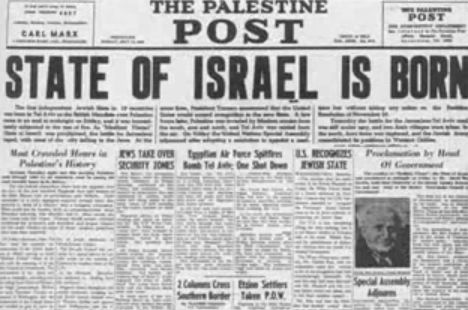
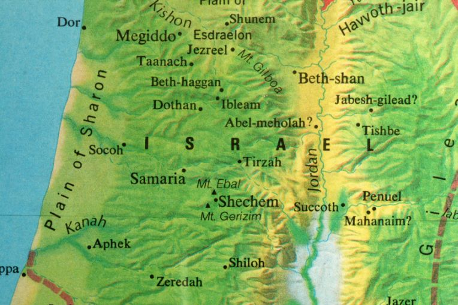
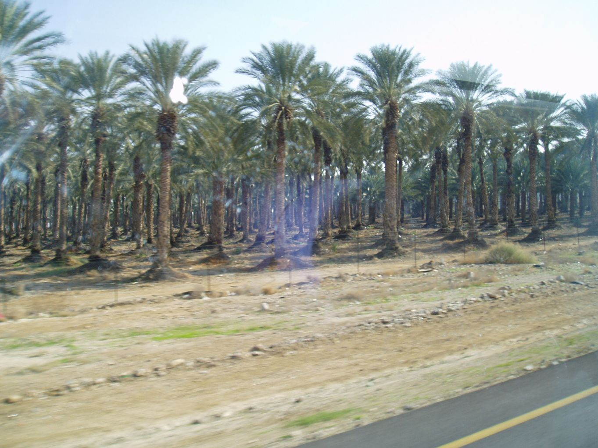

9. Przywrócenie istnienia państwa Izrael a Biblia
„Kto słyszał o czymś takim? Kto widział coś takiego? Czy ziemia może być zrodzona w jednym dniu, czy naród może się urodzić za jednym razem? A jednak Syjon, zaledwie poczuł bóle, od razu porodził swoje dzieci.” (Izaj. 66:8, BW)

14 maja 1948 roku Żydzi w Palestynie ogłosili powstanie niepodległego Państwa Izrael (hebr. מְדִינַת יִשְרָאֵל), trl. Medinat Yisra'el). Aby ten dzień zaistniał, musiało wcześniej nastąpić wiele okoliczności, które tak się złożyły, iż możliwe było proklamowanie w jednym dniu postania ‘nowego – starego państwa’. Nowego, gdyż nie było go na mapie świata przez ponad 2 tysiące lat. Starego, ponieważ starożytny Izrael to jedno z najstarszych państw świata. Taka rzecz nie zdarzyła się nigdy w historii świata. Można by to uważać za przypadek, gdyby nie fakt, iż proroctwa biblijne dawno już to zapowiadały.
„I uczynię z nich jeden naród w tej ziemi na górach izraelskich, i jeden król będzie panował nad nimi wszystkimi, i już nie będą dwoma narodami, i już się nie rozdzielą na dwa królestwa.” (Ezech. 37:22, BW)

Żeby odkryć jak zdumiewające jest powyższe proroctwo, trzeba zdać sobie sprawę z kilku szczegółów historycznych.
Od czasu podziału starożytnego państwa izraelskiego, po śmierci Salomona (około 1000 p.n.e.), na Judę i królestwo północne Izraela, aż do jego podboju przez Asyrię i Babilon (północny Izrael ok. 719 p.n.e., Juda 586 p.n.e) – państwo było ciągle podzielone. Każde z tych królestw miało swojego władcę.
Natomiast po powrocie Żydów z niewoli babilońskiej, ich państwo nie odzyskało autonomii i będąc przez wieki pod okupacją kolejnych mocarstw, nie miało własnego króla.
W roku 139 n.e. cesarz Hadrian zmienił nazwę podbitego państwa na Syria Palestina (Syria palestyńska, czyli filistyńska), chcąc zatrzeć całkowicie pamięć o Izraelu. Prześladowani Żydzi rozproszyli się po całym świecie.
Aż do VII wieku Żydzi nie mieli wstępu do Jerozolimy. Od około roku 1841 do swoich pradawnych ziem zaczęli wracać żydowscy imigranci, co ostatecznie doprowadziło do powstania współczesnego państwa Izrael.
Na spełnienie się zacytowanego powyżej proroctwa Żydzi musieli czekać ponad 3 tysiące lat. Współczesne państwo Izrael, to nie dwa podzielone królestwa, ale jedno państwo – co dokładnie zapowiedziało proroctwo – nawet bez podziałów na plemiona, jak było niegdyś.
Istotnie dla Wszechmocnego nie ma rzeczy niemożliwych. Stało się jak powiedział:
„I uczynię z nich jeden naród w tej ziemi na górach izraelskich” (Ezech. 37:22a, BW*).
Rzecz wydaje się oczywista: państwo Izrael powstało tam gdzie było dawniej, ale wcale nie musiało tak się stać. Koncepcje utworzenia państwa Izrael zakładały różne lokalizacje, jak np. Ugandę lub USA.
Wiele osób ma wątpliwości, związane z następującymi kwestiami:
Jeżeli państwo Izrael powstało z Bożym błogosławieństwem, to dlaczego na terenie tego kraju dochodzi do walk i ciągłych potyczek z państwami arabskimi?
Dlaczego Izraelczycy noszą broń, a jeżeli trzeba strzelają z niej, zabijając ludzi? Jak to się ma do przykazania: ‘Nie zabijaj’?
Zadający takie pytania, zapominają w jaki sposób zostały dane Izraelitom tereny starożytnej ziemi Kanaan – ich ziemi obiecanej. Wszystkie tamtejsze kraje, za przyzwoleniem Bożym, zostały zdobyte mieczem, chociaż Pismo mówi:
„Bo nie mieczem swoim zdobyli ziemię ani ramię ich pomogło im, lecz prawica Twoja i ramię Twoje oraz światło oblicza Twego, gdyż ich sobie upodobałeś” (Ps. 44:4, BW – por. Joz. 23:3).
Jest tak napisane dlatego, ponieważ to Bóg sprawiał, iż walki okazywały się zwycięskie. Oczekiwał jednak od nich zdecydowanego działania (5 Moj. 20:1-4). W ten sposób Hashem uczynił Izrael swoim narzędziem do wytępienia zdegenerowanych moralnie mieszkańców Kanaanu.
„Innym niż one jest dział Jakuba: On jest bowiem stwórcą wszystkiego, a Izrael jest dziedzicznym Jego plemieniem, jego imię Pan Zastępów. Jesteś moim młotem, moim orężem wojennym; tobą miażdżę narody i tobą niszczę królestwa” (Jerem. 51:19-20, BW*).
Żaden Izraelita nie mógł założyć rąk i czekać, aż bez jego udziału zostanie mu dana obiecana ziemia. Nikt nie miał rozterek duchowych, czy ma wziąć do ręki miecz i zabijać. Dlaczego?
Ponieważ przykazanie ‘Nie zabijaj’ (2 Mojż. 20:13) w oryginale brzmi: ‘Nie morduj’.
Jaka to różnica? Morderstwo, to pozbawienie z premedytacją życia niewinnej osoby, natomiast zabicie – to uzasadniony okolicznościami akt pozbawienia kogoś życia. Przykładowo, zabicie człowieka w obronie własnej lub nieumyślne spowodowanie śmierci nie jest morderstwem. Właśnie z tej przyczyny istniały w starożytnym Izraelu miasta schronienia (4 Mojż. 35:22-28).
Starożytni pobożni Izraelici nosili przy sobie miecze, a dziś - z uwagi na postęp - noszą przy sobie karabiny.
Skoro państwo Izrael powstało z woli Boga i zgodnie z Jego zapowiedziami. to dlaczego kraj ten ma wrogów w postaci ościennych krajów, przez co musi być w stałej gotowości bojowej?
Dzieje się tak z tej samej przyczyny, co w starożytności:
„A to są narody, które Pan pozostawił w spokoju, aby przez nie doświadczyć Izraela, tych wszystkich, którzy już nie wiedzieli o wszystkich wojnach w Kanaan, a to jedynie w tym celu, aby późniejsze pokolenia synów izraelskich nauczyły się prowadzenia wojny, więc tylko ci, którzy przedtem tego nie umieli” (Sędziów. 3:1-2, BW*).
Dopóki Izrael będzie miał wrogów, doputy musi uczyć się sztuki wojennej.
Oto kolejne proroctwa, dotyczące ziemi Izraela (Eretz Izrael), a których spełnianie się dostrzegamy już w dzisiejszych czasach:
„Zasadzę na pustyni cedry, akacje, mirty i drzewa oliwne. Zaszczepię na stepie razem cyprys, wiąz i pinie” (Izaj. 41:19, BW).
„Zaiste, zlituje się Pan nad Syjonem, zlituje się nad wszelką jego ruiną. Na Eden zamieni jego pustynię, a jego stepy na ogród Pana. Zapanują w nim radość i wesele, pienia dziękczynne przy dźwięku muzyki” (Izaj. 51:3 BW, por. Izaj. 35:1).
Kiedy Mark Twain w XIX wieku odwiedził Ziemię Świętą bardzo się rozczarował. Nie widział żadnych ludzi. Opisywał tę ziemię jako rozległe pustkowie. Ziemia, którą dziś znamy jako Izrael była w rzeczywistości wielką pustynią. Zanim zaczął się XX wiek, coś zaczęło się zmieniać. Żydzi ze wszystkich stron świata zaczęli wracać do ziemi swych przodków, Ziemi Obiecanej.
Dzięki pracom rekultywacyjnym nieurodzajne ziemie stały się zielone i przynoszą niespotykane plony. Zasadzonych zostało m.in. 200 milionów drzew. Pustynia Negew, została w 65% zmeliorowana, użyźniona i przekształcona w kwitnący ogród.

„I odmienię los mojego ludu izraelskiego, tak, że odbudują spustoszone miasta i osiedlą się w nich. Nasadzą winnice i będą pić ich wino, założą ogrody i będą jeść ich owoce” (Amosa 9:14, BW).
Współczesny Izrael to nowoczesne państwo, choć jeszcze w XIX wieku było tu pustkowie. Dziś kraj ten reprezentuje wysoki poziom gospodarczy i jest liderem w wielu dziedzinach nauki i techniki, m.in. w produkcji oprogramowania komputerowego. W 1998 amerykański tygodnik Newsweek nazwał Tel Awiw jednym z najbardziej rozwiniętych technologicznie miast świata.

Zważywszy na zaledwie 60 letnią historię istnienia Izraela, dorównanie poziomem do nowoczesnych państw jest naprawdę imponujące.
„I będą mówić: Ten kraj, niegdyś spustoszony, stał się podobny do ogrodu Eden; a miasta, które legły w gruzach i były spustoszone i zburzone, są teraz obwarowane i zamieszkane. I poznają narody, które wokoło nas pozostały, że Ja, Pan, odbudowałem to, co było zburzone, zasadziłem to, co było spustoszone; Ja, Pan, powiedziałem to i uczynię” (Ezech. 36:35-36, BW).
Nie tylko zostało wskrzeszone państwo Izrael, ale też i jego język – nieużywany przez około 1800 lat. To niezwykłe, że ten starożytny język, do tej pory używany tylko przy czytaniu Biblii oraz w celach religijnych, stał się w roku 1948 językiem urzędowym w Izraelu. Tym bardziej, iż jeszcze w XIX wieku, sami Żydzi uważali, że wprowadzenie hebrajskiego jako języka używanego w życiu codziennym jest niemożliwe, bowiem nie posiadał on wielu współczesnych terminów. Można to porównać do sytuacji, kiedy dziś chciano by posługiwać się na codzień łaciną. Jednak za sprawą Eliezera Ben Jehudy (nazywanego wowczas przez samych Żydów szaleńcem) zdołano przywrócić hebrajszczyznę.
Eliezer ben Jehuda** (1858-1922) mówił zawsze po hebrajsku: na ulicy z obcymi i z przyjaciółmi, a także w domu, z żoną i dziećmi. Stworzył Wielki Słownik Języka Hebrajskiego, gdzie umieścił słowa pochodzące z Biblii, a także wiele nowych słów, opracowanych przez niego, a które weszły obecnie do codziennej mowy hebrajskiej (na przykład: pociąg, gazeta, moda, biuro, lody i inne…). Szukał nauczycieli hebrajskiego w całym kraju i znalazł kilku „szaleńców”, którzy nauczali hebrajskiego w szkołach.
Język ten przetrwał próbę czasu, w przeciwieństwie do innych nieudanych prób wprowadzania języków z ‘niebytu’, np. Esperanto. Hebrajski jest używany od 60 lat – tworzy się w nim dzieła literackie, poezję, a także cieszy się dużym zainteresowaniem na świecie.
Istnieje jeszcze jedna kwestia, która zastanawia wiele osób. Dlaczego Bóg błogosławi narodowi, który nie uznaje Jezusa za swojego Mesjasza?
O tym w kolejnym rozdziale.
----------------------------
* wytłuszczenia w tekstach biblijnych- autor opracowania
** Eliezer ben Jehuda - zdjęcie obok (źródło: wikipedia)
Copyright 2008-2021 - kopiowanie i publikowanie w celach komercyjnych bez wiedzy i zgody autora zabronione. Zapytania o zgodę na wykorzystanie materiału proszę kierować do działu: mesjasz.info@pm.me
Książka
MISZKAN
Pierwszy Boży Przybytek

Proroctwo, dotyczące połączenia IZRAELA i Judy, według Ezechiela
ZAPOWIEDŹ POŁĄCZENIA IZRAELA i JUDY
15) I doszło mnie słowo Pana tej treści:
16) A ty, synu człowieczy, weź sobie kawałek drewna i napisz na nim: Należy do Judy i synów izraelskich, jego bratnich plemion. Weź także drugi kawałek drewna i napisz na nim: Należy do Józefa, drewno Efraima, i całego domu izraelskiego, jego bratnich plemion.
(17) Potem złóż razem obydwa drewna w jeden kawałek, aby stanowiły jedno w twoim ręku.
(18) A gdy potem twoi rodacy odezwą się do ciebie tymi słowy: Czy nie wyjaśnisz nam, co przez to rozumiesz?
(19) Wtedy powiedz im: Tak mówi Wszechmocny Pan: Oto Ja biorę drewno Józefa, które jest w ręku Efraima i jego bratnich plemion izraelskich, i przykładam je do drewna Judy, i uczynię z nich jeden kawałek, tak że w moim ręku będą stanowić jedno.
(20) Obydwa kawałki drewna, na których umieścisz napis, będą na ich oczach w twoim ręku.
(21) Potem powiedz im: Tak mówi Wszechmocny Pan: Oto Ja zbiorę synów izraelskich spośród narodów, do których przybyli, i zgromadzę ich zewsząd, i przyprowadzę ich do ich ziemi.
(22) I uczynię z nich jeden naród w tej ziemi na górach izraelskich, i jeden król będzie panował nad nimi wszystkimi, i już nie będą dwoma narodami, i już się nie rozdzielą na dwa królestwa.
(23) I już się nie skalają swoimi bałwanami i swoimi obrzydliwościami, i żadnymi swoimi występkami. Wybawię ich z wszystkich ich odstępstw, przez które zgrzeszyli, i oczyszczę ich; i będą moim ludem, a Ja będę ich Bogiem.
(24) A sługa mój, Dawid, będzie ich królem; wszyscy oni będą mieć jednego pasterza; będą postępować według moich praw, będą przestrzegać moich przykazań i wykonywać je.
(25) I będą mieszkać w ziemi, którą dałem mojemu słudze Jakubowi, w której mieszkali ich ojcowie; będą w niej mieszkać zarówno oni, jak i ich synowie i wnuki po wszystkie czasy, a sługa mój, Dawid, będzie ich księciem na wieki.
(26) I zawrę z nimi przymierze pokoju, będzie to przymierze wieczne z nimi. Okażę im łaskę, rozmnożę ich i postawię swoją świątynię wśród nich na wieki.
(27) I będę wśród nich mieszkał; będę ich Bogiem, a oni będą moim ludem.
(28) I poznają narody, że Ja jestem Pan, który uświęcam Izraela, gdy moja świątynia będzie wśród nich na wieki.
Co wspólnego, z zapowiedzianym KRÓLESTWEM: IZRAEL, ma obecne PAŃSTWO: Izrael? Czy to państwo spełnia wszystkie kryteria PRZYSZŁEGO KRÓLESTWA: IZRAEL, szczegółowo opisane przez Ezechiela w 37 rozdziale, wersetach: 15 do 28?
Dlaczego Żydzi Mesjańscy "WYŁUSKALI", z tak szczegółowego opisu połączenia IZRAELA i Judy, TYLKO jeden werset 22?
Czy takie pominięcie prawie całego proroctwa, dla jednego tylko, PRZYDATNEGO wersetu, jest dopuszczalne?
Powrót IZRAELA - kiedy?
Tak, państwo jest jedno i to nawet bez podziału na plemiona IZRAELA tyle tylko, że jego obywatelami nie są IZRAELICI, ale Izraelczycy i Żydzi, a niektórzy nawet wolą być Hebrajczykami – czy tak być miało?
A ta „ohyda spustoszenia”, która stoi tam, „gdzie stać nie powinna” (Ew. Marka 13: 14), której widok powinien wzywać do ucieczki z Judei – czy ona zachęca „zaginione owce z domu IZRAELA” do zgromadzania się na terenie państwa, które przyjęło nazwę „Izrael”? Czy te fakty nie wzywają do głębokiego zastanowienia się nad tym, czy Bóg zapowiedział takie „królestwo”?
A jeżeli do tego dodamy jeszcze werset 13: 20, z tej samej ewangelii Marka, który mówi: „A jeśliby Pan nie skrócił tych dni, nie ocalałaby żadna istota, ale ze względu na wybranych, których wybrał, skrócił te dni.”, to możemy być pewni, że ostrzeżenia Marka nie można lekceważyć, a zgromadzanie w JUDEI wszystkich wybranych, w momencie nieustannego zagrożenia państwa Izrael ze strony obecnych agresorów, może dać skutek odwrotny do zamierzonego bezpiecznego zamieszkania IZRAELITÓW. Kto wtedy ocaleje spośród wybranych? Kto może być autorem rozgłaszanego TERAZ wezwania do powrotu?
A może chodzi o spełnienie proroctwa Zachariasza 13: 8 i 9? Czy już teraz?
@ Anonim Nie martw się.. Pan
@ Anonim
Nie martw się.. Pan ma swoje plany i je wypełni co do joty, choćby się nam wszystkim wydawało, że to nieprawdopodobne i niemożliwe.
Czy po ludzku myśląc, jest to możliwe, zeby Żydzi żyjący 2000 lat w diasporze zachowali swoją tożsamość, swoją wiarę, swoje obyczaje i swoją Tradycję w sposób niemal nienaruszony??? A jednak.
Polacy, gdy emigrują, zapominają o swojej tożsamosci w jednym.. dwu pokoleniach i się asymilują.
Żydzi nie. Prawdopodbnie dlatego miedzy innymi Bóg wybrał sobie ten naród do niesienia przykazań i postanowień Bożych i Ewangelii wsyzstkim narodom swiata. Bóg jest pewny, ze ten naród jest wytrwały i chociaż resztka z niego, wytrwa do końca, aż wszystko się wypełni wg Jego Słowa.
Ja się nie martwię
Ja się nie martwię, ja tylko nie lubię domysłów i przypuszczeń; dla mnie ŚWIĘTE, to tylko to, co NAPISANO! A napisano tak -
Druga Księga Królewska 19:
30) A pozostała przy życiu resztka domu Judy zapuści korzeń w głąb i wyda owoc w górze.
31) Bo z Jeruzalemu wyjdzie resztka, a z góry Syjon poczet ocalonych; DOKONA TEGO GORLIWOŚĆ Pana Zastępów.
A co stanie się z całą resztą tych, z których ta RESZTKA zostanie WYŁONIONA?
To także wyjaśnia Biblia i tylko Biblia. Wystarczy ją uważnie czytać i nie rozumieć więcej, niż NAPISANO.
Z czasem zrozumienie tego, co NAPISANO, pogłębia się.
Wspaniały artykuł zawierający